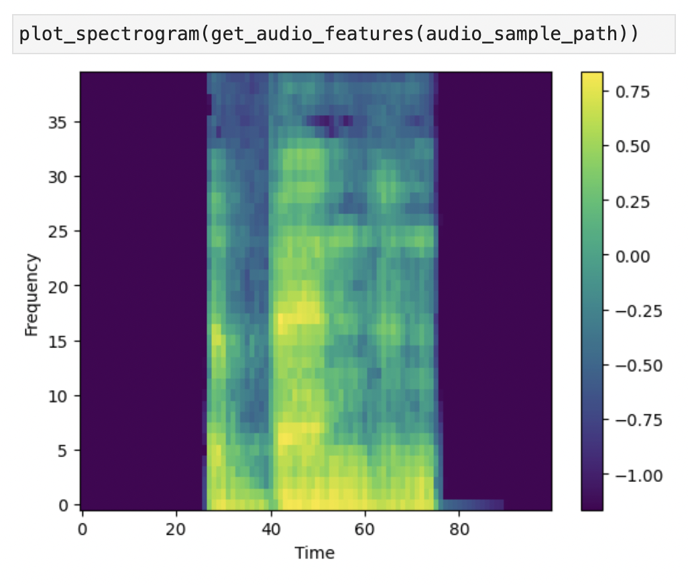
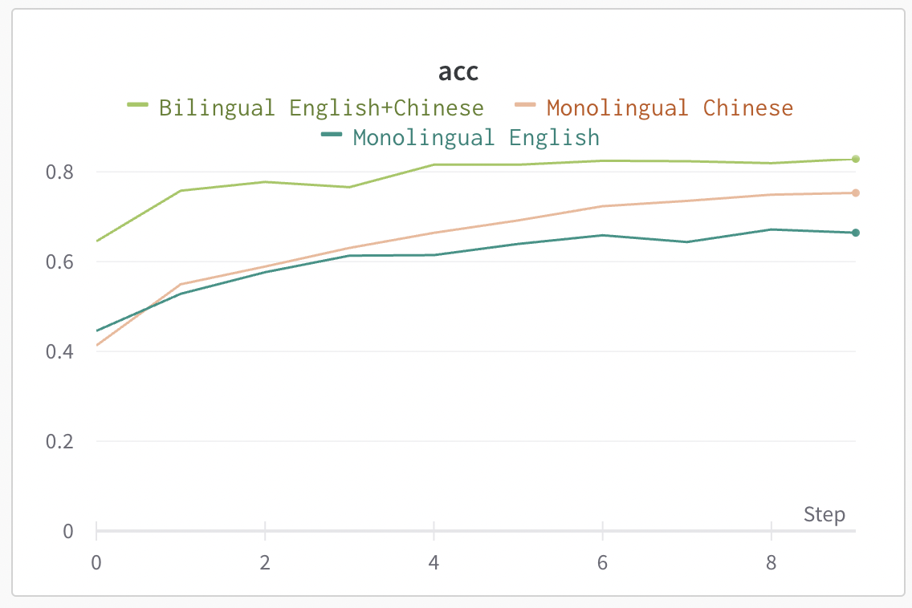
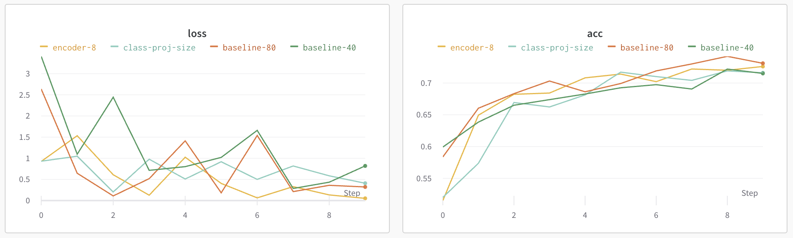
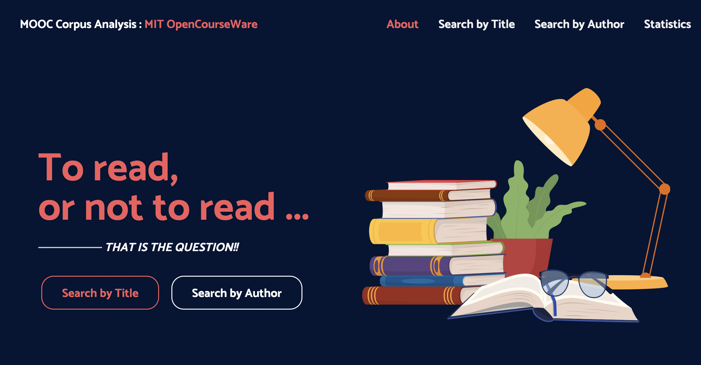
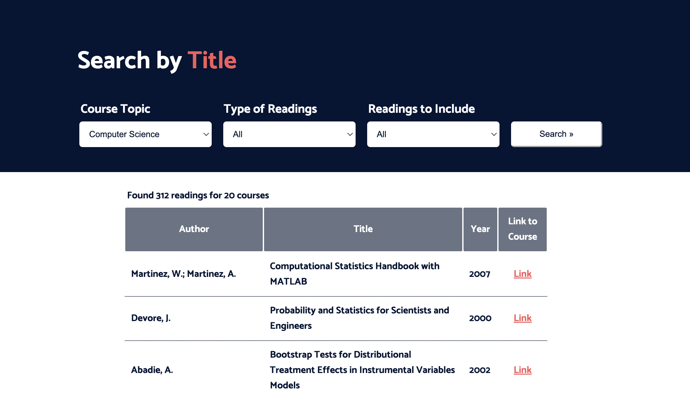
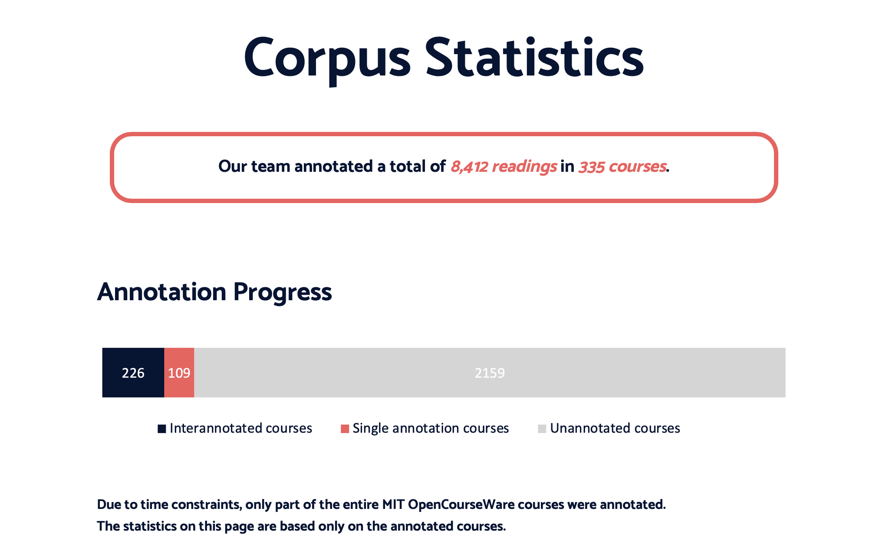
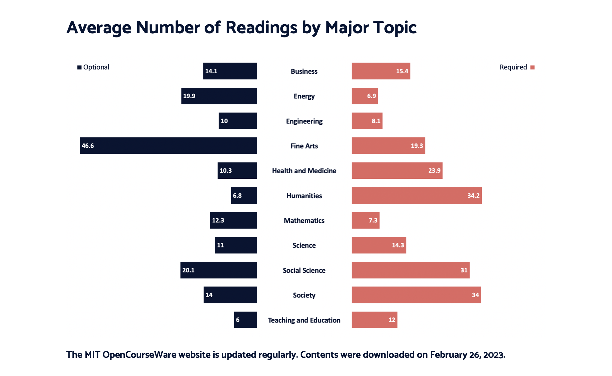
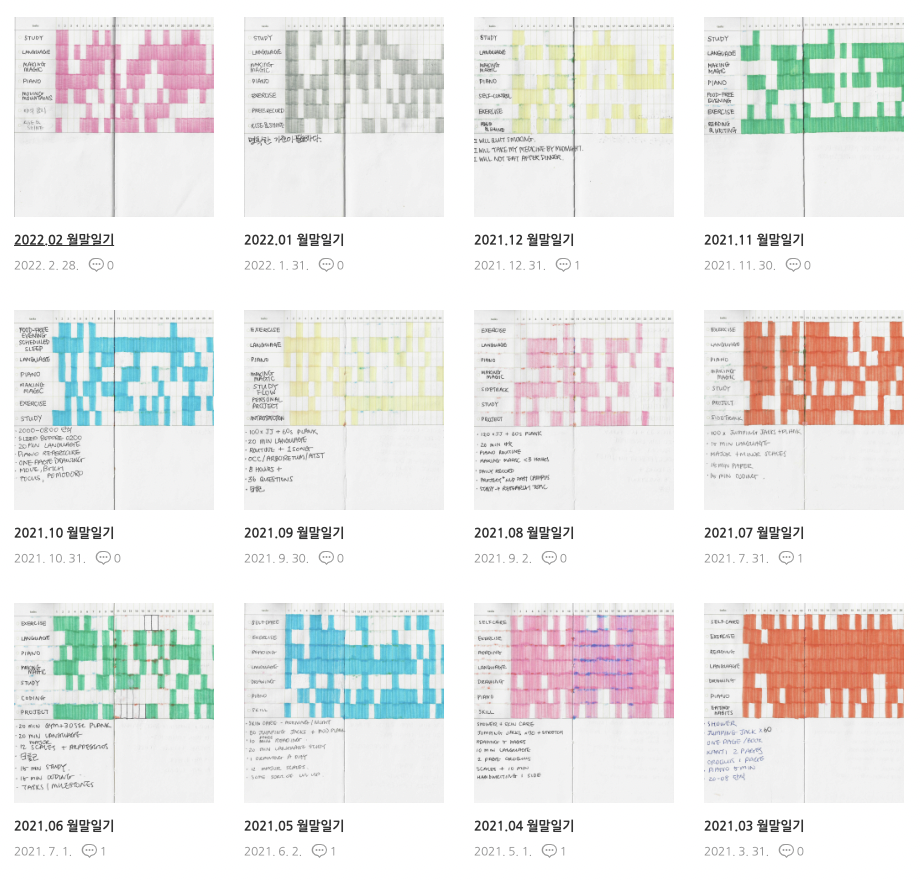
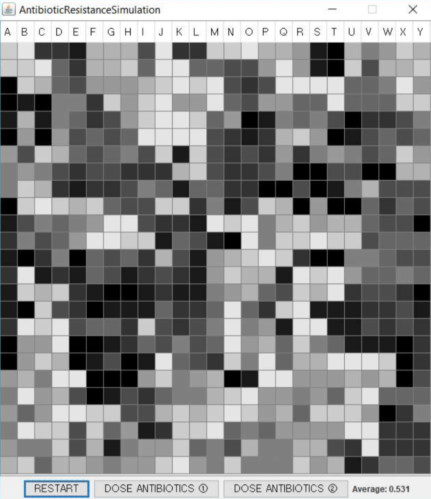

PROJECT-00005
Few-shot Learning for Keyword Spotting in Automatic Speech Recognition
2023 April
 

A small-scale replication study of academic research by Mazumder et al.—"Few-Shot Keyword Spotting in Any Language" (2021) and "Multilingual Spoken Words Corpus" (2021).
I collaborated with 3 other students to compare the performance of EfficientNet, Whisper, and Wav2Vec2 models as an audio embedding layer in an automatic keyword spotting pipeline.
PROJECT-00004
MIT OCW Course Syllabus Corpus Analysis
2023 February - 2023 March
 
 
MIT OpenCourseWare provides free online resources for 2,494 university courses. (Based on Februrary 26, 2023.)
The project aimed to annotate reading materials from each course syllabus page, categorizing them into required and optional readings.
The annotations can help self-leaners quickly find important readings related to their topic of interest via a corpus search engine, and inform instructors with statistics on readings that provide guidelines to designing future curriculums.
PROJECT-00003
small steps
2020 December - Ongoing

Personal implementation of atomic habits. Seven criterias are chosen for each month, for which I mark each day whether I have accomplished the daily goal or not.
PROJECT-00002
Search Engine for Student Projects & Mentor Recommendation System
2020 April
I surveyed the traditional approaches to NLP, then apply it to improve the Quest Univeristy Canada student Keystone projects search engine through topic analysis using Latent Dirichlet Allocation.
I also designed a recommendation that suggests top 3 professors as supervisors for students, based on their natural language thesis proposal. The accuracy of the best model was 53.2%, compared to the accuracy of a random model of 10.7%.
PROJECT-00001
Antibiotic Resistance Simulation
2019 September

Java application simulating antiobiotic resistance. The simulation begins with a single bacteria cell with a color that denotes a gene expression. The bacteria replicates over time with a chance of mutation of the gene. Users can give dosage of two different antibiotics that kill bacteria cells with high or low gene expression, and are able to see antibiotic resistance in action.